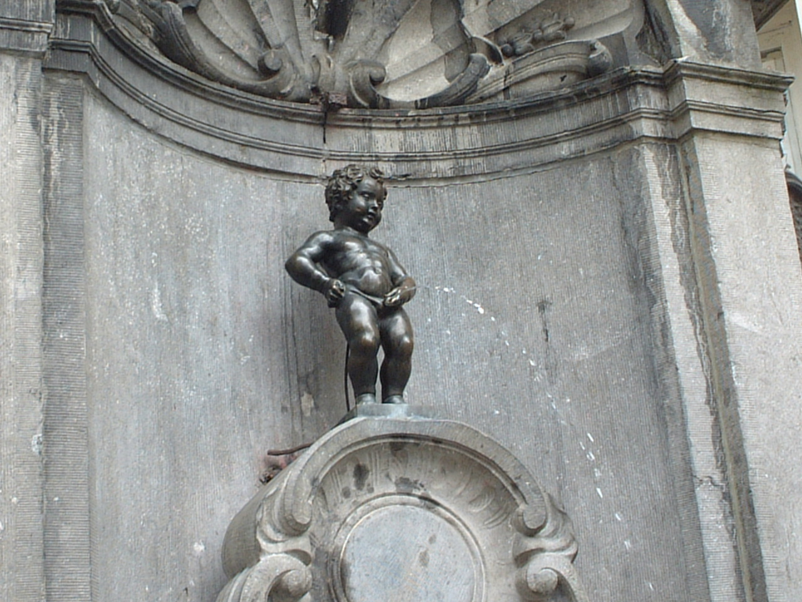
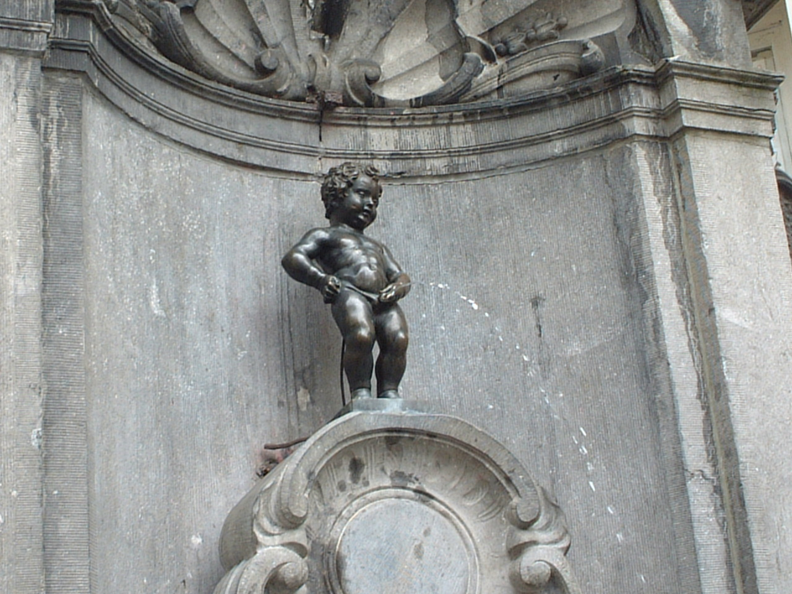

Bruxelles, une ville en mouvement
La modeste Bruxelles est la capitale de la Belgique, de la Flandre et de l'Europe. La Grand-Place médiévale est immense, avec de nombreux immeubles du 17ème siècle et des marchés aux fleurs quotidiens. Rouvert en 2006, l'Atomium, la Tour Eiffel de Bruxelles, offre une vue imprenable aussi bien à l'intérieur que sur l'extérieur. Les amateurs d'architecture ne devront pas manquer la visite du Musée Horta, aménagé dans la maison du grand architecte belge Victor Horta. Les clubs et les bars de la place St. Gery ne désemplissent jamais. Les plats de fruits de mer abondent à Ste. Catherine. Optez pour la marche afin d'éviter les embouteillages dans les rues étroites.
La date de la fondation de Bruxelles ne fait pas l’unanimité. L’emplacement du site était déjà connu
au VIIe siècle, lorsque l’évêque de Cambrai a commandé la construction d’une chapelle sur l’une des
îles de la Senne.
Au fur et à mesure, un petit village s’est formé autour de la chapelle,
qui portera le nom de Broeksele.
La date officielle de la fondation de la ville est 979, date à laquelle le Duc de Brabant a fait
construire une forteresse sous l’empire d’Otton II du Saint-Empire, pour défendre la place.
C’est à partir du XIIe siècle, que les Ducs de Brabant se sont installés sur le mont des Arts,
l’actuelle Place Royale, lorsque la ville s’est constituée en tant que telle.
Située sur la route conduisant à Bruges et Cologne, la ville s’est très vite étendue et s’est
convertie en un important centre de commerce. Elle a fait partie des villes qui ont organisé les «
Foires de Champagne » et à la fin du XIIIe siècle, la cité a rejoint la « Ligue Hanséatique ».
Actualités

 
❮
❯

❮
❯
Evénements
La Ville de Bruxelles organise ou accueille de nombreux évènements qui ponctuent l'année.